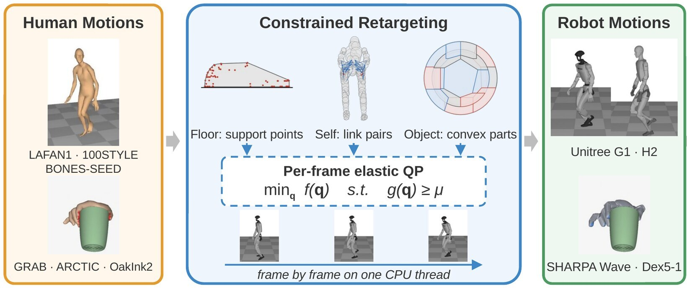
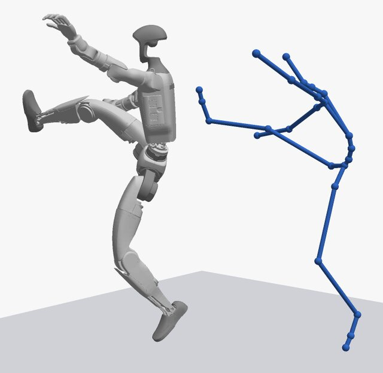
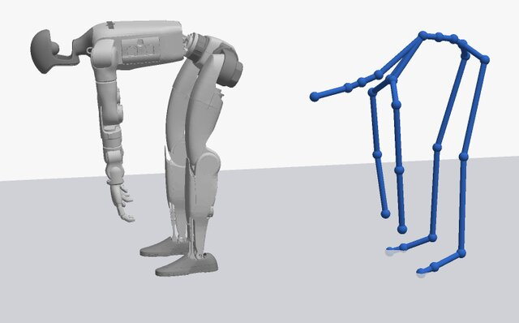
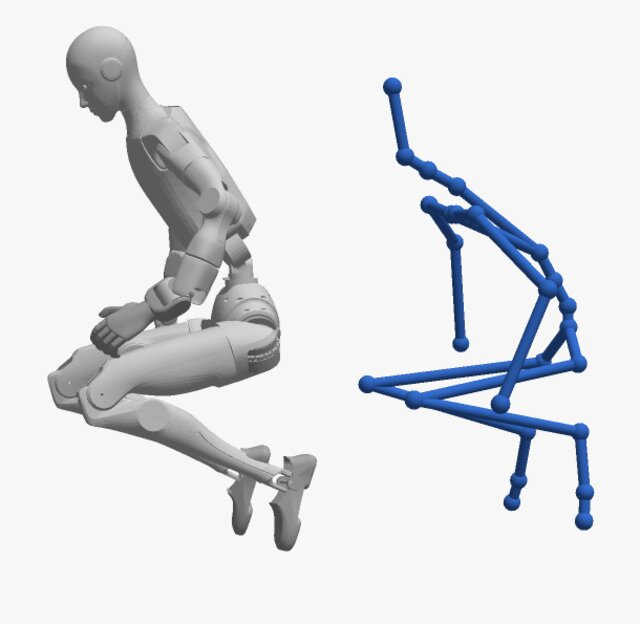
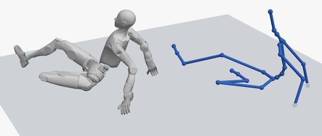

TL;DR One solver for humanoid locomotion, dexterous hands and whole-body human-object interaction.
Learning from large human motion datasets is a practical path toward capable humanoid robots, but transferring human motion to robot hardware requires kinematic retargeting across locomotion, dexterous manipulation, and whole-body human-object interaction (HOI). Most existing retargeters handle only one of these tasks and force a trade-off between speed and physical accuracy: fast inverse-kinematics solvers ignore contact and collision geometry, while contact-aware optimisers run at only a few frames per second. We present Extreme Motion Retargeting (EMR), a constrained-kinematics framework that casts every numerical solve in all three tasks as a sequence of quadratic subproblems over linearised geometric rows. Motion tracking and contact targets enter as soft least-squares objectives, while joint limits and floor, self-collision, and object non-penetration enter as elastic inequality constraints. Collision geometry comes from compact offline proxies used from coarse to fine, and each constraint family reduces to a fixed number of rows, so each clip compiles into a fast CPU loop. Across six datasets on two humanoids (Unitree G1, H2) and two dexterous hands (SHARPA Wave, Dex5-1), EMR runs one to two orders of magnitude faster than contact-aware baselines on a single CPU thread while improving retargeting quality across all three tasks, achieving near-zero foot-floor penetration, higher manipulation contact accuracy, and whole-body interaction with fewer penetrating frames and smoother motion. Code will be released upon acceptance.





| Method | MPJPE ↓ | g-MPJPE ↓ | Foot pen. ↓ | Float ↓ | Slide ↓ | Self-pen. ↓ | FPS ↑ |
|---|---|---|---|---|---|---|---|
| EMR (SOMA) | – | – | – | – | – | – | – |
| EMR (SMPL-X) | – | – | – | – | – | – | – |
| GMR | 96.7 | 770.5 | 19.3 | 29.8 | 10.3 | 3.41 | 620 |
| UMR | 60.8 | 71.6 | 1.04 | 0.09 | 12.2 | 1.25 | 112 |
| ProtoMotions | 74.9 | 862.4 | 31.5 | 25.4 | 17.7 | 9.42 | 312 |
| PHC | 108.6 | 1288.7 | <0.01 | 99.8 | 53.9 | 1.24 | 50 |
| OmniRetarget | 57.9 | 143.8 | 2.49 | 1.58 | 10.8 | 6.09 | 4.0 |
| SOMA-Retargeter | 58.7 | 292.9 | 65.9 | 0.03 | 5.5 | 6.18 | 34 |
| Method | Contact@2 ↑ | Contact@5 ↑ | F1 ↑ | Max pen. ↓ | Pen. frames ↓ | FPS ↑ |
|---|
| Method | Contact@2 ↑ | Contact@5 ↑ | Pen. frames ↓ | Max pen. ↓ | Body acc. ↓ | Success ↑ | FPS ↑ |
|---|---|---|---|---|---|---|---|
| EMR | – | – | – | – | – | – | – |
| HOI-Retarget | 15.3 | 24.0 | 74.1 | 36.3 | 2.33 | 0 / 32 | 10.0 |
| OmniRetarget | 0.0 | 0.0 | 0.0 | 0.0 | 6.05 | 0 / 32 | 0.5 |
| RoboKit | 8.8 | 12.4 | 72.7 | 36.2 | 75.68 | 0 / 32 | 2.0 |
| OTRetarget (unofficial) | 21.2 | 42.2 | 23.0 | 7.0 | 29.94 | 0 / 32 | 0.7 |
@article{emr2026,
title = {Extreme Motion Retargeting: High-Speed Constrained Kinematics
for Humanoids and Dexterous Hands},
author = {Author One and Author Two and Author Three and Author Four},
journal = {arXiv},
year = {2026}
}